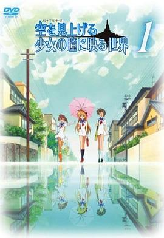

仰望天空的少女瞳中映照的世界 / 空を見上げる少女の瞳に映る世界
又名：MUNTO / 仰望天空的少女瞳孔中所映照的世界
我才知道是2009年的作品，不过画风确实不像京都近年的画风。。。
作品信息
| 导演 | 木上益治 |
| 编剧 | 木上益治 |
| 主演 | 相泽舞 / 小野大辅 / 堀川千华 / 今野宏美 / 高桥伸也 / 水原薰 / 平松广和 / 井上喜久子 / 内田彩 / 稻田彻 / 若本规夫 / 白石稔 / 田中凉子 / 松元惠 / 土谷麻贵 / 斋藤枫子 / 远藤广之 |
| 类型 | 动画 |
| 制片国家/地区 | 日本 |
| 语言 | 日语 |
| 首播 | 2009-01-13(日本) |
| 集数 | 9 |
| IMDb | tt1356888 |
最后一次看到是 2026-08-01T11:07:23+10:00 · 豆瓣原页